Games with a mechanic of their own.
Every Garoo game starts with a mechanic we haven't seen, is built by hand in code, and is made to include as many players as it can.
Out now
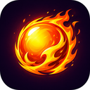
Matter MazeBallSteam · iPhone · Android · Mac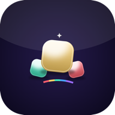
Garoo ArcadeiPhone · iPad · Android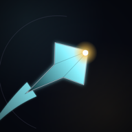
StarcarveriPhone · Android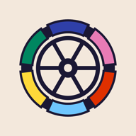
SpokefalliPhone · iPad
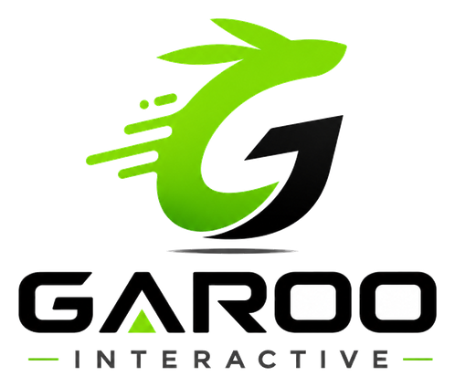
Out now on Steam, Google Play & App Store
Matter MazeBall — tilt, roll, survive.
Every ball rolls differently. Stone sinks. Ice melts. Fire spreads. The maze doesn't care which one you brought. 30 elemental balls, 39 mazes across three worlds — no two runs alike.
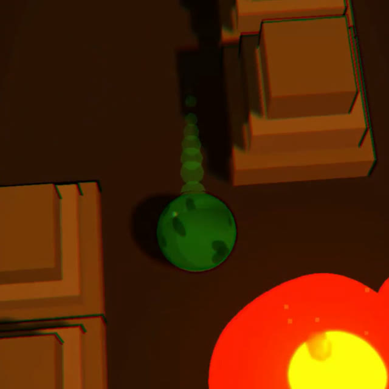
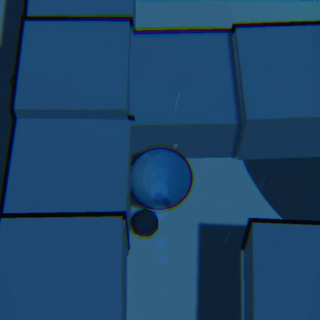
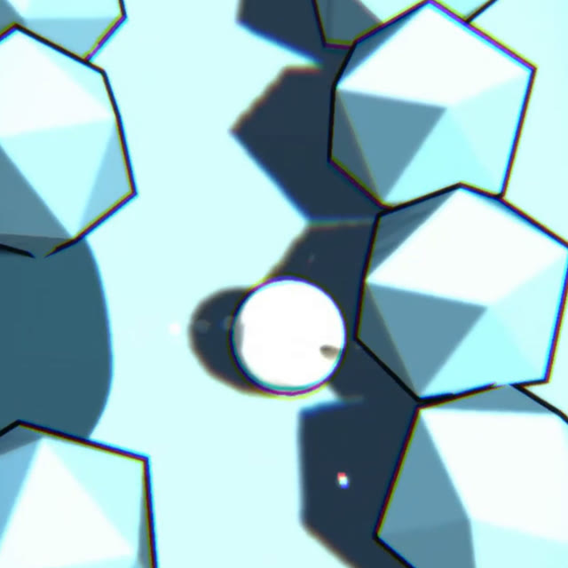
Matter MazeBall
Tilt-and-roll physics mazes where fire, ice, water, and storms decide how your ball moves.
Available now on Steam, Google Play & App Store
Matter MazeBall — Element Trials
Casual · Puzzle · Local Co-op
- 30 elemental balls — stone, fire, water, ice, air and more, each with its own physics
- 39 mazes, three worlds — elemental adventures, real-world cities, and mega-city landmarks
- Living hazards & weather — lava, storms, wind and rain that physically push your ball around
- Daily maze + endless mode — plus local 2-player races and full offline play, no connection needed
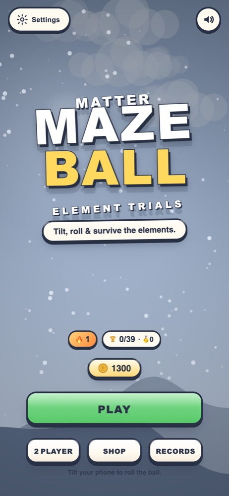
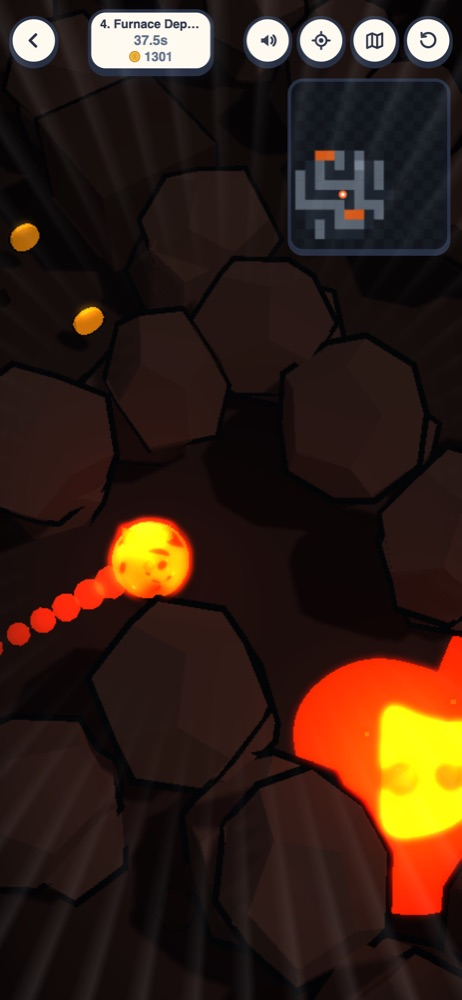
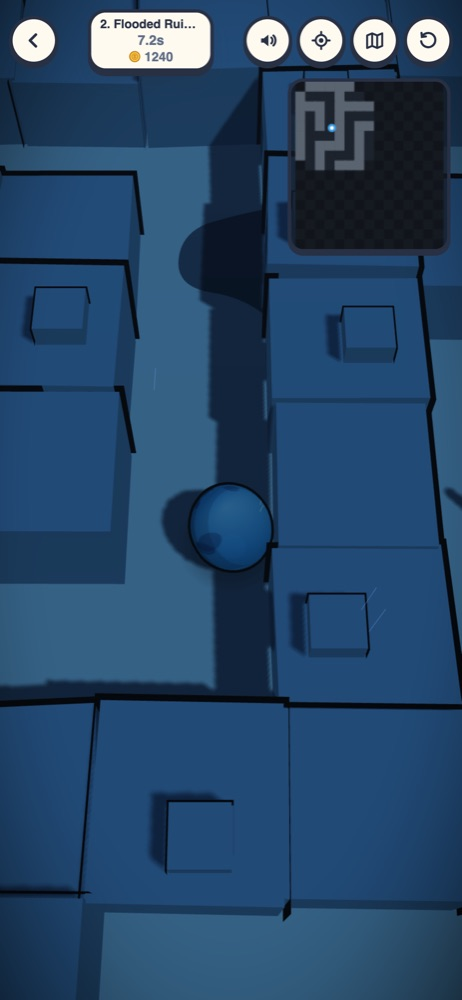
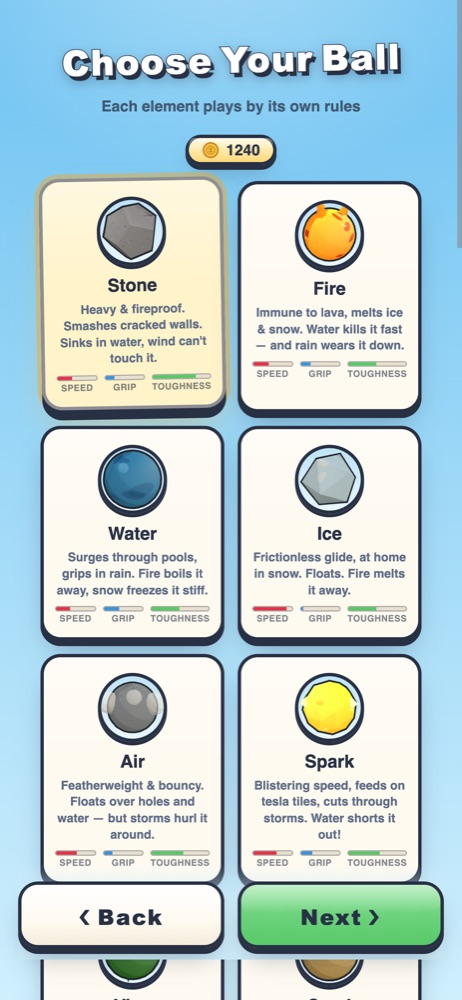
Garoo Arcade
Twenty pocket games in one app — puzzles, reflex runs, tilt mazes and a stadium of sprint events.
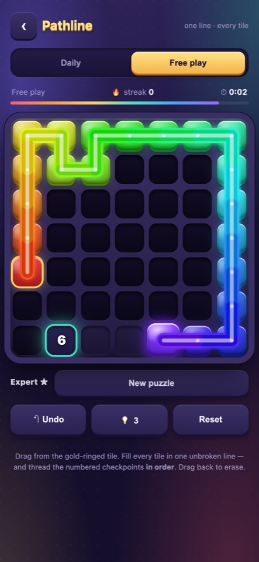
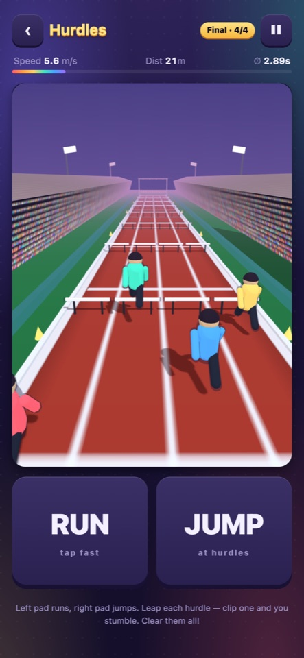
Available now on the App Store and Google Play
Garoo Arcade
Puzzle · Arcade · Motion · Sport
- Puzzle — Pathline's one-line daily maze, Lucent, Gem Flow, Picross and Lights Out
- Arcade — Refract, Nodecut and Chargeflip: short runs with real skill ceilings
- Motion — tilt your phone to balance an orb in Ballast or feel your way through Echo's hidden maze
- Sport — ten tap-and-race events, from Sprint to Kayak Sprint, run in heats up to a Final
Starcarver
A one-tap orbit arcade. Every jump leaves a line of light.
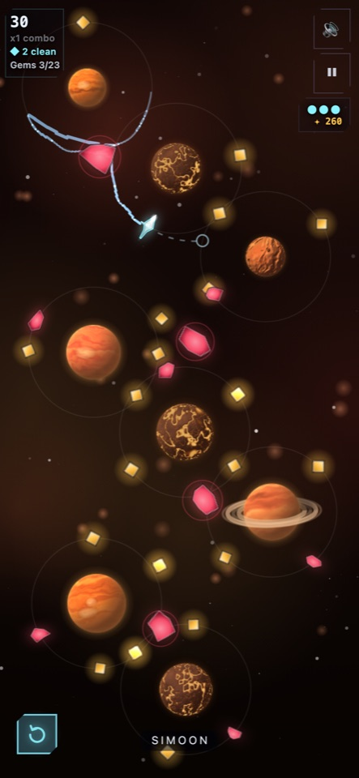
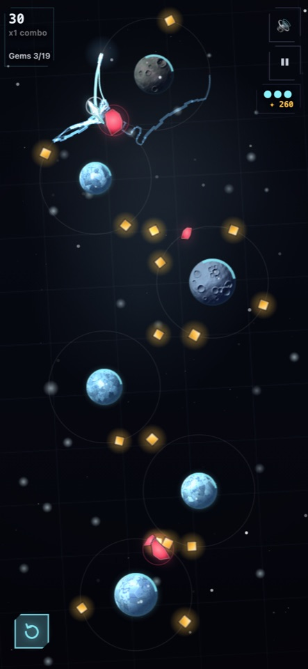
Out now on Google Play and the App Store
Starcarver
One-Tap Orbit Arcade
- One tap — your satellite circles a planet. Tap, and it snaps to the next one
- 50 systems — hand-built across 10 sectors, each a small puzzle in timing and route
- Chain gems — sweep every ring, build your combo, clear a system with no hits for three stars
- Your constellation — an ink trail follows every run, so each one draws its own path across the sky
Spokefall
Flick the rings until a whole spoke is one color. Then watch it shatter.
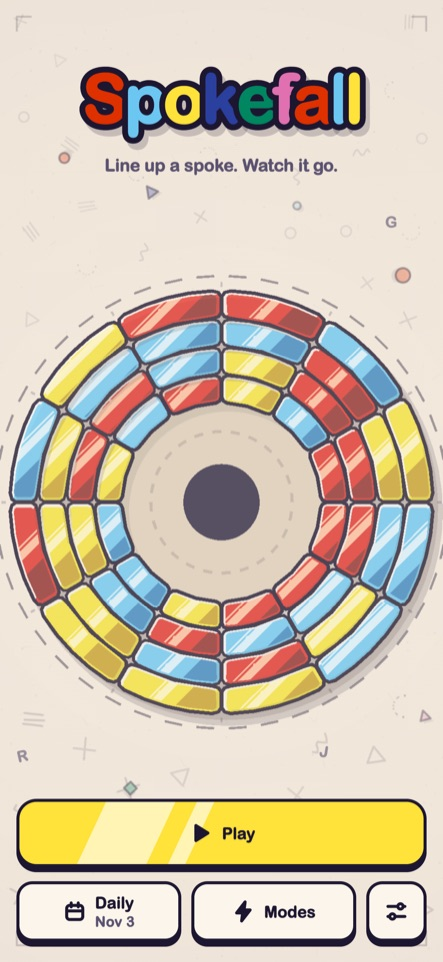
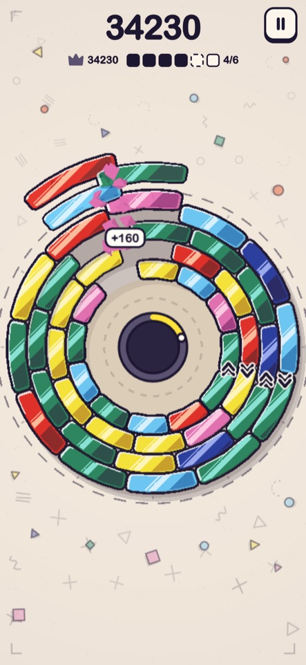
Out now on the App Store
Spokefall
Ring Puzzle · iPhone · iPad · Free
- Flick or drag — swipe any ring and it spins, then settles into place
- Then it falls — after a shatter the wheel steps in and new rings arrive at the rim. Line up another spoke right behind it to start a chain
- Five modes — Classic, Daily, Rush, Unwind and Few Flicks. Daily is one wheel a day, the same for everyone
- No account — scores and settings stay on your device. One optional ad, only if you choose it
What we don't compromise on
Three rules that hold regardless of genre, platform, or how many games we've shipped.
Every game starts from a mechanic we haven't seen before, never a genre we're chasing. If it feels like something else, we haven't found the game yet.
Premium, built by hand
Every visual and sound is procedural — written in code, not licensed from a store.
No dark patterns
"One more run" should feel like your own idea. We never guilt, pressure, or trick.
Accessible by default
Colorblind-safe, readable, and built to include as many players as the game allows.
Let's talk
Press, partnerships, support, or just a note — we read everything ourselves.